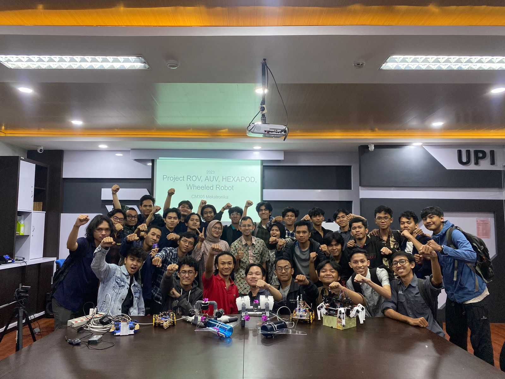

Hello World!!! My Name is Muhamad Haidar Al-Farruq
Project That I Worked On :
Smart Aquaponic
Smart Aquaponic was inspired by how we can farm vegetables and
growing some fish in the same places.
The concept was to channel water that has been filtered by plants into fish cultivation
media ponds.
I was handle the automatic system such as automatic feeder, automatic pump adjustment with
amonia
level
as an indicator.
Seaperch
Another project that i have finished was a remote control submarine called Seaperch.
Seaperch
uses DC motor that mounted with propeller that they can push Seaperch body to move forward.
Favorite Subjects
- Mobile Programming
- Web Programming
- Intelligent Systems and Automation
- Embedded System
- Cyber Security
- Research Methods
- Entrepreneurship in technology
|
Computer Engineering Indonesia University of Education Lecturer
- Taufik Dwi Putra
- Munawir
- Deden Pradeka
- Anugrah Putra
- Wirmanto Suteddy
|
My Beloved Friends of A Class

About Me
I am 21th years old. I
am born at 21 September 2002 in Majalengka. My hobby is watching anime,
drawing, playing games, and so many that i can't fit in this paragraph. I studied Computer Engineering
at
Indonesian University of Education. Before that, I was graduated from SMAN 4 Sukabumi at 2021 in the
science
class. Right now I lived at Kostan Pondok Biru, Cibiru Hilir Bandung.
Find me on : facebook,
instagram,
youtube.